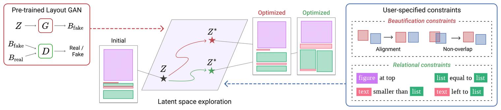

Constrained Graphic Layout Generation via Latent Optimization
ACM Multimedia 2021
Kotaro Kikuchi Edgar Simo-Serra Mayu Otani Kota Yamaguchi
Abstract
It is common in graphic design humans visually arrange various elements according to their design intent and semantics. For example, a title text almost always appears on top of other elements in a document. In this work, we generate graphic layouts that can flexibly incorporate such design semantics, either specified implicitly or explicitly by a user. We optimize using the latent space of an off-the-shelf layout generation model, allowing our approach to be complementary to and used with existing layout generation models. Our approach builds on a generative layout model based on a Transformer architecture, and formulates the layout generation as a constrained optimization problem where design constraints are used for element alignment, overlap avoidance, or any other user-specified relationship. We show in the experiments that our approach is capable of generating realistic layouts in both constrained and unconstrained generation tasks with a single model.
LayoutGAN++ architecture

Link
BibTex
@inproceedings{Kikuchi2021,
title = {Constrained Graphic Layout Generation via Latent Optimization},
author = {Kotaro Kikuchi and Edgar Simo-Serra and Mayu Otani and Kota Yamaguchi},
booktitle = {Proceedings of the ACM International Conference on Multimedia},
series = {MM '21},
volume = {},
year = {2021},
pages = {},
doi = {10.1145/3474085.3475497}
}